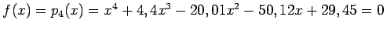

Inhalt Index DeskTop Bronstein

 Numerische Mathematik Numerische Lösung nichtlinearer Gleichungen Lösung von Polynomgleichungen Lage der Nullstellen
Numerische Mathematik Numerische Lösung nichtlinearer Gleichungen Lösung von Polynomgleichungen Lage der Nullstellen


Zur Eingrenzung des Bereichs, der in der komplexen Zahlenebene für die reellen oder komplexen Nullstellen in Frage kommt, geht man von der Polynomgleichung (19.11) zu der Gleichung
über und bestimmt z.B. durch systematisches Probieren eine obere Schranke r0 für die positiven Nullstellen von (19.20). Es gilt dann für alle Nullstellen von (19.11):
| (19.21) |
| Beispiel |
|
, |
Hinweis: Für die Bestimmung der Anzahl der komplexen Nullstellen mit negativem Realteil sind z.B. in der Elektrotechnik in der sogenannten Ortskurventheorie spezielle Verfahren entwickelt worden, die dort als Stabilitätskriterien bezeichnet werden (s. Lit. 19.11, 19.37).